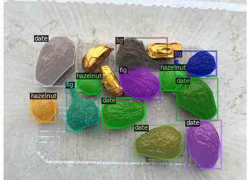
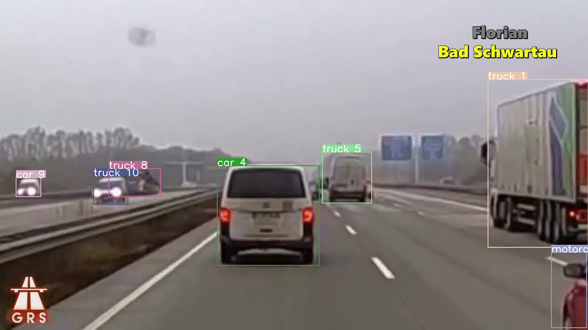
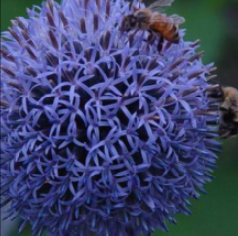

My name is Oluwabukola Grace Adegboro, a Ph.D. student at Dublin City University (ML-Labs), and an alumni of Ontario Tech University,
AIMS Rwanda (AMMI), and Elizade University.
My current research lies in the area of Machine Learning, Computer Vision and Explainable AI. I have been opportuned to learn and gain well-rounded experiences
in the field of Machine Learning (ML) using supervised, unsupervised and deep learning algorithms.
I am passionate about developing ML solutions to solve challenging problems, promote user satisfaction, and drive innovation and impact.
News
2026 Highlight
-
Thrilled to have our paper, "Artificial Intelligence Based Techniques for Brain Tumor Analysis: A Systematic Review",
published in the Artificial Intelligence in Medicine
Journal.
-
Happy to attend the inaugural Mastercard Black Career Fair 2026, exploring career opportunities, and engaging in meaningful conversations on professional development.
-
Delighted to join the University of British Columbia (UBC), Canada for visiting research.
Read More News
2025 Highlight
-
Honoured to deliver an invited talk on "Brain Tumour Analysis Using Deep Learning" at the AICS 2025 Medical Imaging Workshop.
-
Happy to have our
paper,
"Ensemble Learning with Sparse Hypercolumns", accepted at the AICS 2025 conference.
-
Happy to volunteer at the ACM Multimedia 2025 conference, supporting presenter and conference activities.
-
Pleased to volunteer at the Higher Options 2025 event, engaging with prospective students and sharing about the Electronics Engineering program at Dublin City University (DCU).
-
Grateful to present a poster on my PhD research at the inaugural
Irish Neuro-Oncology Society 2025 Conference at Trinity College Dublin.
-
Excited to co-author the
paper,
"Towards End-to-End Training of Automatic Speech Recognition for Nigerian Pidgin",
published in the DLI 2025 Research Track (PMLR).
-
Excited to have our short paper, "VLSM-Ensemble: Ensembling CLIP-based Vision-Language Models for Enhanced Medical Image Segmentation", accepted at the MIDL 2025 conference.
-
Enjoyed facilitating the ML-Labs CoderDojo Outreach programme, introducing kids to AI using Scratch.
-
Delighted to volunteer at the Engineers Ireland STEPS "An Engineer Like Me" 2025 event, sharing impactful engineering projects and facilitating a hands-on design challenge for primary school girls.
2024 Highlight
-
Delighted to participate in the Women in STEM Initiative by DCU Insight, encouraging secondary school students to explore opportunities in engineering, AI, and technology through career talks and discussions in December 2024.
- Excited to participate in the Black Googler Network (BGN) Hackathon at Google Ireland in October 2024.
- Pleased to co-organize Deep Learning Indaba under the Travel Committee in September 2024.
- Happy to have our second IMVIP paper receive the Best Poster Award.
- Excited to present our paper, "XAIMed-Net: Towards Explainable Brain Tumour Detection in 2D T1-Weighted CE-MRI Images using Transfer Learning" at IMVIP conference in August 2024.
- Grateful to attend the 1st African Computer Vision Summer School (ACVSS) in July 2024.
- Delighted to attend CVPR conference in June 2024.
- Ecstatic to co-organize the 2024 ML-Labs summer school hosted at Dublin City University.
- Elated to be selected as a finalist for the 2023 DCU Tell it Straight Competition.
- Thrilled to participate in the UCC AI Quest Challenge and awarded as the Top Woman of Influence in February 2024.
2023 Highlight
- Grateful to be awarded the Cadence Women in Technology Ireland scholarship.
- Joyful to start my Ph.D. program at Dublin City University and awarded an ML-Labs scholarship.
- Happy to co-organize the CV4Africa workshop at the 2023 Deep Learning Indaba.
- Excited to co-organize the 2023 Deep Learning Indaba under the ASI team.
- Glad to share our paper on Incremental Learning-Based Anomaly Detection Using CT Data.
- Delighted to co-organize the 1st Black in AI social at CVPR 2023.
- Ecstatic to join the AI4Good Lab 2023 cohort as an ML trainee.
- Excited to graduate from Ontario Tech University.
2022 Highlight
- Glad to present at the 2022 CNS DIET conference.
- Happy to give a poster presentation and volunteer at the Deep Learning Indaba CV workshop.
- Joyful to receive the Google Travel and Conference Grant.
- Grateful to participate in the IBM Future Women in Tech Mentorship program.
- Elated to participate in a Machine Learning course offered by Vector Institute.
- Excited to join the Accelerate Her Future Fellowship Circle.
2021 Highlight
- Glad to support WiML participants as a volunteer at ICML 2021 and NeurIPS 2021.
- Thrilled to participate in Google's 12-week CS Research Mentorship Program (CSRMP).
- Pleased to receive the Dean's Graduate Scholarship at Ontario Tech University.
- Delighted to join the Smart Energy Systems Lab (SESL) as a Graduate Research Assistant.
2020 Highlight
- Presented a poster at the WiML NeurIPS 2020 workshop.
- Volunteered at the WiML NeurIPS 2020 workshop.
- Participated in Machine Learning Summer School (MLSS 2020).
- Presented at the Women in AI Ignite social at ICML 2020.
- Volunteered at ICML 2020 and WiML UnWorkshop 2020.
- Supported the testing of the CVPR 2020 virtual conference platform.
- Participated in ICLR 2020 as an attendee and volunteer.
2019 Highlight
- Awarded a fully funded master's scholarship through the AMMI program funded by Google and Meta.
Portfolio

Understanding the Amazon Forest from Satellite Imagery
The goal is to devise deep learning methods for understanding deforestation trends in the Amazon from satellite imagery.

Instance segmentation was carried out on a nuts custom dataset that was trained on an object detection library (Detectron2).

A simple object tracking system detects objects on all video frames on predictions from a detectron model and links these predictions across time frames.

An image classifier which recognizes a wide range of flower species is developed using PyTorch deep learning framework.
A machine learning model is built and optimized to predict the highest donation yield which would help the organization to contact more potential donors using donation letters.
Potential customers within a population segment that are more likely to increase the company's revenue are identified using unsupervised machine learning methods.
Invited Talks / Presentations
-
Honoured to present at the AICS 2025 Medical Imaging Workshop through an invited talk on
"Brain Tumour Analysis Using Deep Learning".
-
Glad to present a poster titled,
"XAIMed-Net: Towards Explainable Brain Tumour Detection in 2D T1-weighted CE-MRI Images Using Transfer Learning"
at the inaugural Irish Neuro-Oncology Society (INOS 2025) Conference.
- Thrilled to present our paper titled, "XAIMed-Net: towards explainable brain tumour detection in 2D T1-weighted CE-MRI images using transfer learning" at IMVIP conference in August 2024.
- Happy to present at the 2022 Canada Nuclear Society Disruptive Innovative Emerging Technologies (CNS DIET) conference on "Incremental Learning for Anomaly Detection Applied
to Computed Tomography Scans".
- Elated to present a poster at the 2022 Deep Learning Indaba on "Incremental Learning Based Anomaly Detection For Computed Tomography (CT)."
- Pleased to give a poster presentation at the WiML NeurIPS 2020 workshop on "Understanding the Amazon Forest Using Satellite Imagery."
- Excited to present at the Women in AI Ignite ICML social 2020 program on "Machine Learning in Deforestation."
{kind=link}
{kind=link}
{kind=link}
{kind=link}
{kind=link}